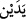

ifâdesini Âdem’in şerefli olduğunu gösterecek şekilde yorumlamak gerekir. O da
Âdem’in, Allah’a âid teşbîh ve tenzîh sıfatlarının her ikisini de yüklenip ihtivâ
etmesidir.
Bahru’l-hakâik’te şöyle der: İki elimle ifâdesiyle Allah, lütuf ve kahır sıfatlarına
işâret etmektedir ki her ikisi de Allah’ın bütün sıfatlarını şâmildir. Çünkü hiçbir sıfat
yoktur ki ya lütuf ya da kahır kabilinden olmasın. Hiçbir mahlûk bulunmaz ki ya lütuf ya
da kahır sıfatının mazharı olmasın. Melekler Hakk’ın lütuf sıfatının tezahürleri iken
şeytanlar da Hakk’ın kahır sıfatının tezahürleridir. Fakat Âdemoğulları böyle değildir;
onlar hem lütuf hem de kahır sıfatlarının tezâhürü olarak yaratılmışlardır. Şu kâinâtın bir
kısmı Allah Teâlâ’nın lütuf sıfatının aynası iken, bir kısmı da kahır sıfatının aynasıdır.
Âdemoğulları ise “Varlığımızın delillerini, (kâinattaki uçsuz bucaksız) ufuklarda ve
kendi nefislerinde onlara göstereceğiz ki, o Kur’an’ın gerçek olduğu onlara iyice
belli olsun.” (Fussilet 41/53) âyetinin de gösterdiği üzere, Allah’ın hem zâtının hem de
sıfatlarının aynasıdır. İşte Âdem secde edilen bir varlık olma özelliğini, bu iki sıfat
grubunu birarada bulundurma özelliği sâyesinde kazanmıştır. Bu mânâ ile ilgili olarak
derler ki:
Güzel bir ayna geldi ancak,
Bir ayna gibi parlak olmadı,
Bu aynanın cilâsı Âdem oldu,
O’nun zâtı, tüm sıfatlarıyla birlikte ortaya çıktı,
Küllî ve kapsamlı bir ayna oldu,
Zât ve sıfatların sırrı ondan (Âdem’den) parladı.
Velhâsıl, Allah Teâlâ kâinâtı, hem endişe ve korku (havf) hem de ümid (recâ) sâhibi
olarak yaratmış bulunmaktadır. Biz de O’nun öfkesinden korkar, rızâsını umarız. Bu
endişe ve ümid, gazab ve rızâ sıfatlarının eseridir. Ayrıca Allah kendisini hem cemîl
hem de zü’l-celâl olarak; yâni hem lütuf ve rahmetle ilgili olan “cemâl” sıfatlarıyla,
hem de kahır ve galebe ile ilgili “celâl” sıfatlarıyla muttasıf biri olarak tavsif etmiştir.
Böylece bizleri üns ve heybet üzere yaratmıştır ki “üns” O’nun cemîl bir varlık
oluşundan; “heybet” ise celîl bir varlık oluşundan ileri gelmektedir. Allah’a nisbet
edilen herşey ve hidâyet etme-saptırma, aziz ve zelil kılma gibi bir karşıtı bulunan tüm
isimler (esmâ-i mütekâbile) bu minval üzeredir. Çünkü Allah Teâlâ Hazretleri, bizleri
gâh biz bu sıfatlarla muttasıf olduğumuz halde, gâh bunların eserleri bizde tezahür etmiş
olduğu halde yaratmış ve bu karşıt iki nevî sıfatı “iki el” () diye ifâde etmiştir.
Çünkü bunlar birbirlerine karşıt olup Allah varlıklar âleminde bu ikisi sâyesinde
tasarrufta bulunmaktadır.
Bu iki el, Hak Teâlâ’dan insan-ı kâmili yaratmak üzere teveccüh eden iki eldir. Zira
insan-ı kâmil, kâinâtın hakikatlerini ve bütün ilâhî isimlerin tezahürleri olan kâinat
programını kendi varlığında toplamaktadır. İşte Allah bu iki eli bunun için övmüştür.